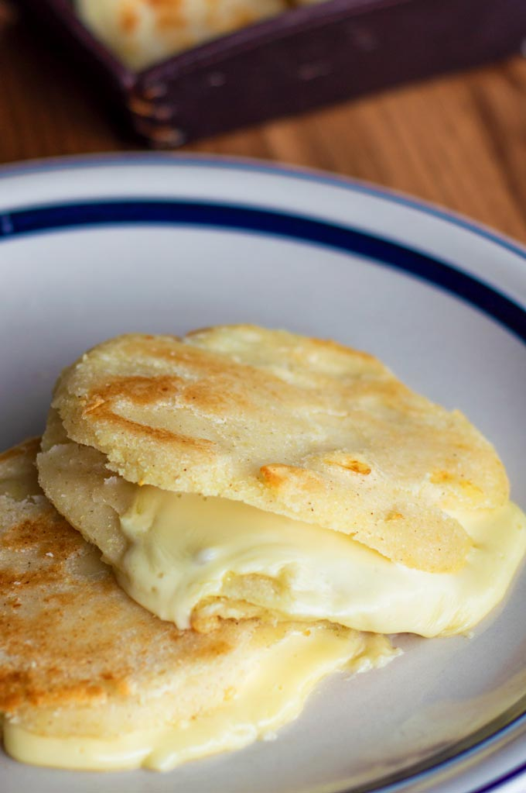

While the chorizo is cooking, beat the eggs and milk in the bowl
Once chorizo is cooked add the eggs and milk mixture and put it on medium to low heat
While that is cooking, put the tortillas in the microwave for 30 seconds to soften
Once the eggs and chorizo are done cooking build the breakfast tacos. Add the eggs, chorizo, sour cream, oaxaca cheese and queso fresco onto the tortillas

Arepas con Queso
Prep Time: 7 minutes
Cook Time: 15 minutes
Total Time: 22 minutes
Ingredients:
1 cup pre-cooked arepa flour
1 cup warm water
1/3 cup mozzarella cheese
1/3 cup of queso fresco
2 tbsp of butter
1 tsp of salt
Instructions:
Combine arepa flour, warm water, salt, butter, and mozzarella cheese
Once combined, knead the dough with your hands for about 4 minutes while moistening your hands with water
Form 5 small balls with the dough, then flatten each ball with your hands
Add butter to a pan over medium to low heat. Place arepas in pan and cook for about 3 and a half minutes on each side or until each side is fully cooked and crispy
Once cooked, place the arepas on a plate and top each arepa with queso fresco and mozzarella cheese